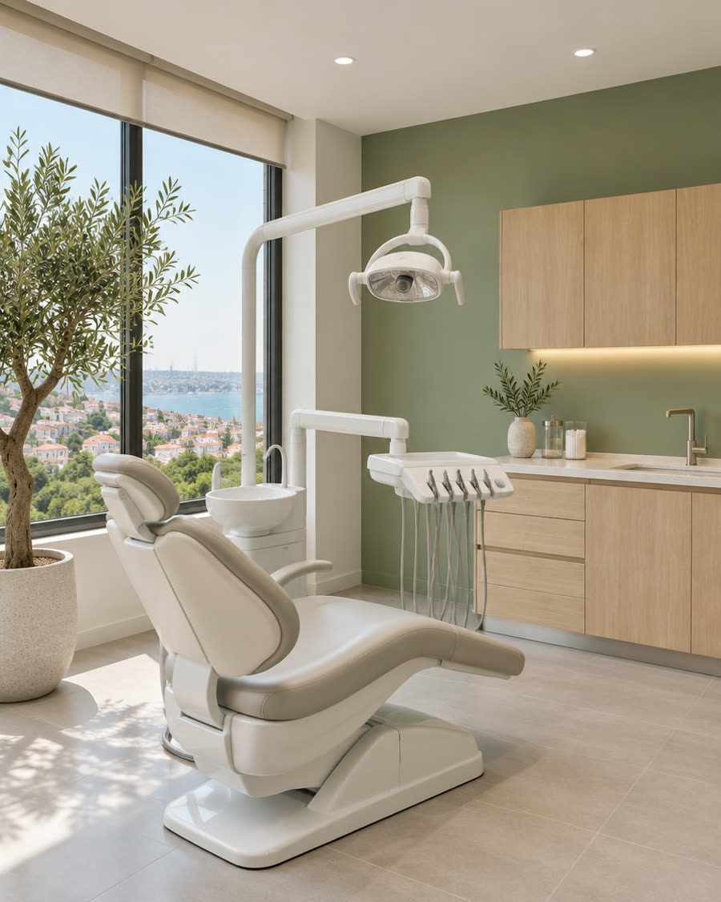
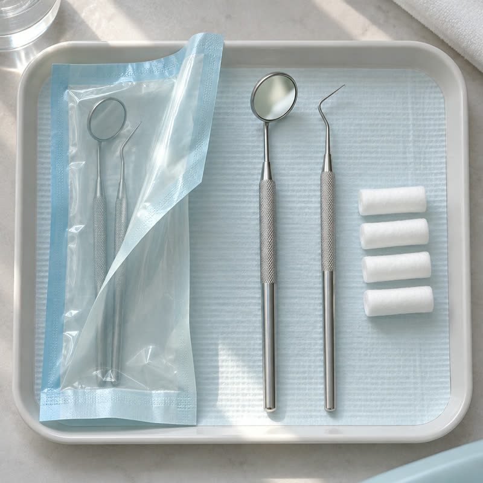
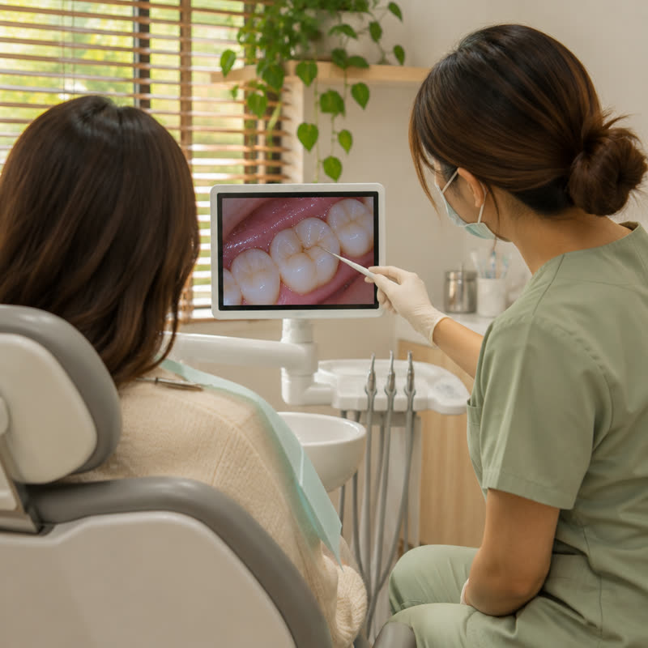
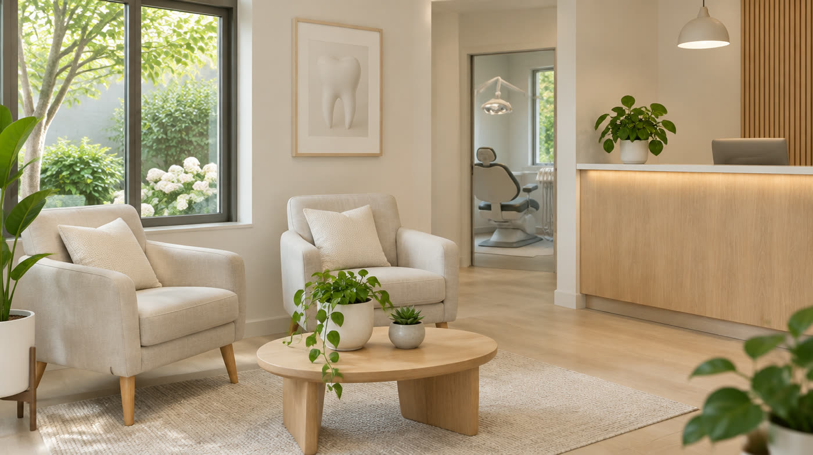

Diş Hekimi
Ağız ve diş sağlığı muayenesi ve tedavisi. Muayenehanemizde randevu ile çalışılır; uygun gün ve saat için bize yazabilirsiniz.
Pancarlı Mah. Bahriye Üçok Blv. Fatih Apt. No:22/B, Şehitkamil

Şikâyetiniz olan dişi şemadan işaretleyin ve kısaca anlatın. Bilgiler WhatsApp mesajı olarak hazırlanır, göndermeden önce size gösterilir.
Şema, diş hekimlerinin kullandığı FDI numaralandırmasını izler: ilk rakam çene bölgesini, ikinci rakam dişin sırasını gösterir.
Bu sayfadaki bilgiler genel bilgilendirme amaçlıdır. Size uygun tedavi ancak muayene sonrasında belirlenir.


